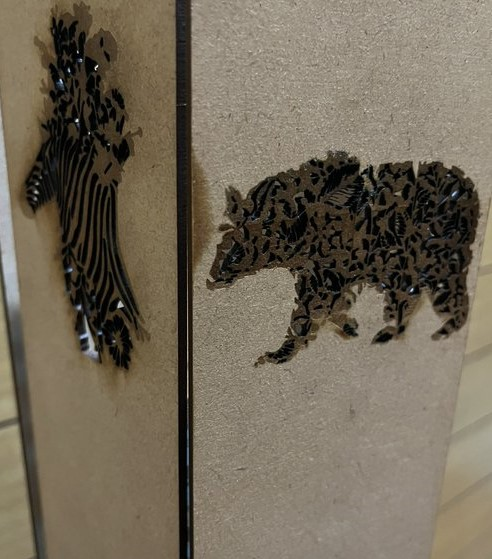
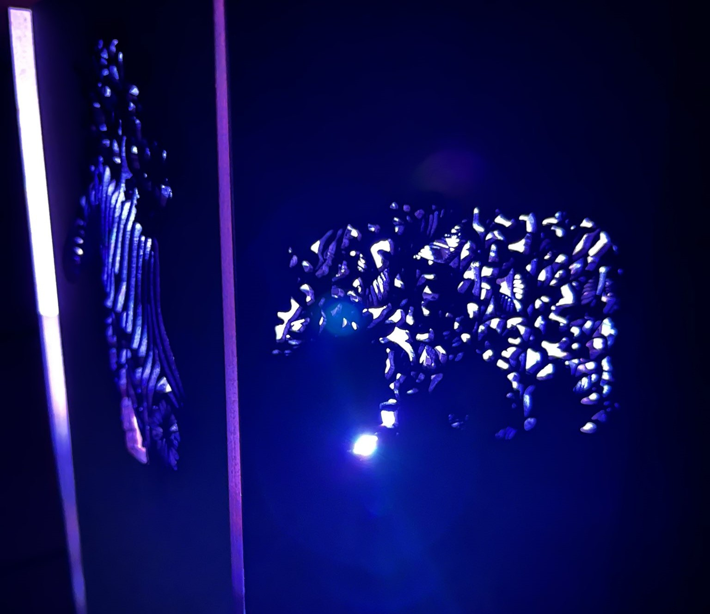
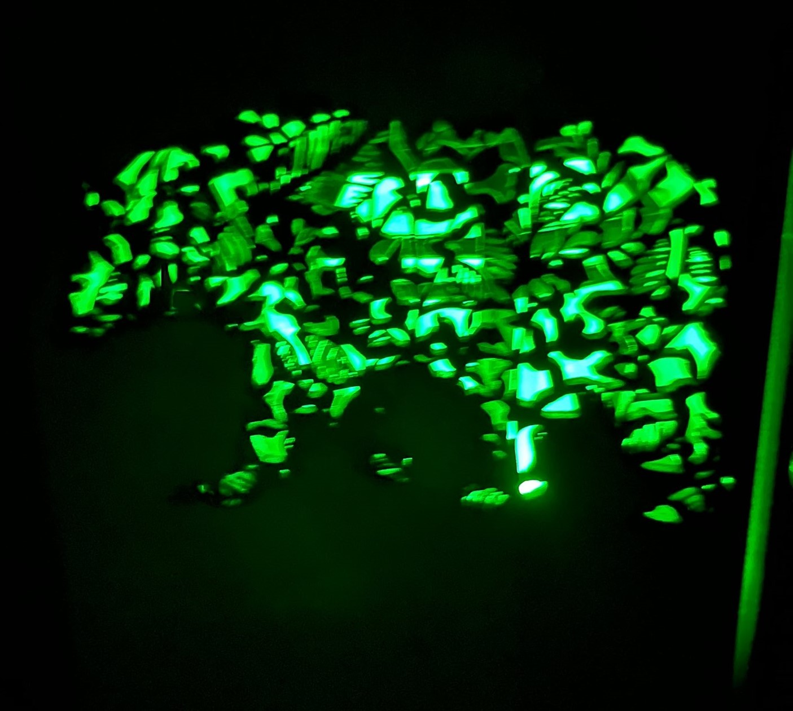
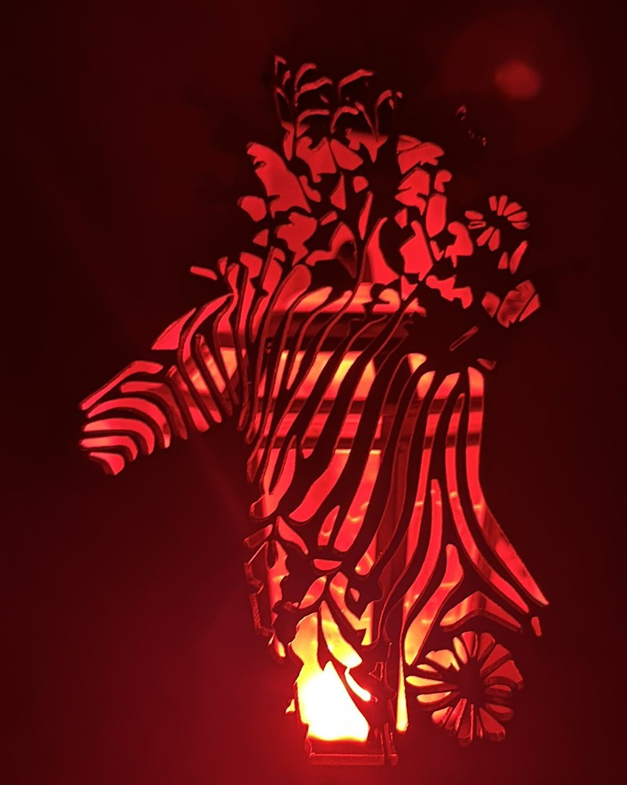

 
今回使用したペンライトは私の推しのライブで使用したものです。
私の推しは毎ライブごとにデザインの異なるペンライトを発売します。
そのため、前回のツアーで使ったぺンライトはもうほとんど使いません。
しかしデザインもかわいくて飾りたいと思ってはいたのですが、せっかくなら光るんだしライトとして使いたいと思っていました。
また、ペンライトを見るとライブのことを思い出します。
私にとってライブとは心躍り動かされるものです。
そのため、ペンライトを利用すれば私の心が動かされるものが作れるのではないかと感じ、今回制作することにしました。
今回はせっかくなので推しをイメージしたデザインにしました。
推しの楽曲の中に「jungle」という曲があります。
そしてその曲に登場する動物をメンバーに当てはめパフォーマンスをするため、メンバーたちにはそれぞれ担当動物というものがあります。
それが上記のデザインの通り、ライオン・コウモリ・ハリネズミ・シマウマ・トリ・クマ といったものとなっています。
まず第一の反省点として、制作パーツが多すぎて完成しなかったことが挙げられます。
もっと簡略化したり、パーツを減らすという選択肢もありますが、私自身妥協をしたくないので、これでよかったとも思っています。
しかし、もう少し早めに取り掛かったり、計画的にできたらよかったと思っています。
デザインや完成品に関してはとても満足しています。
ツアーごとにデザインも違い大きさにも差があるペンライトに合わせて、どんな形でも入るように大きめに制作したりなど、工夫を凝らした作品にできたと思います。